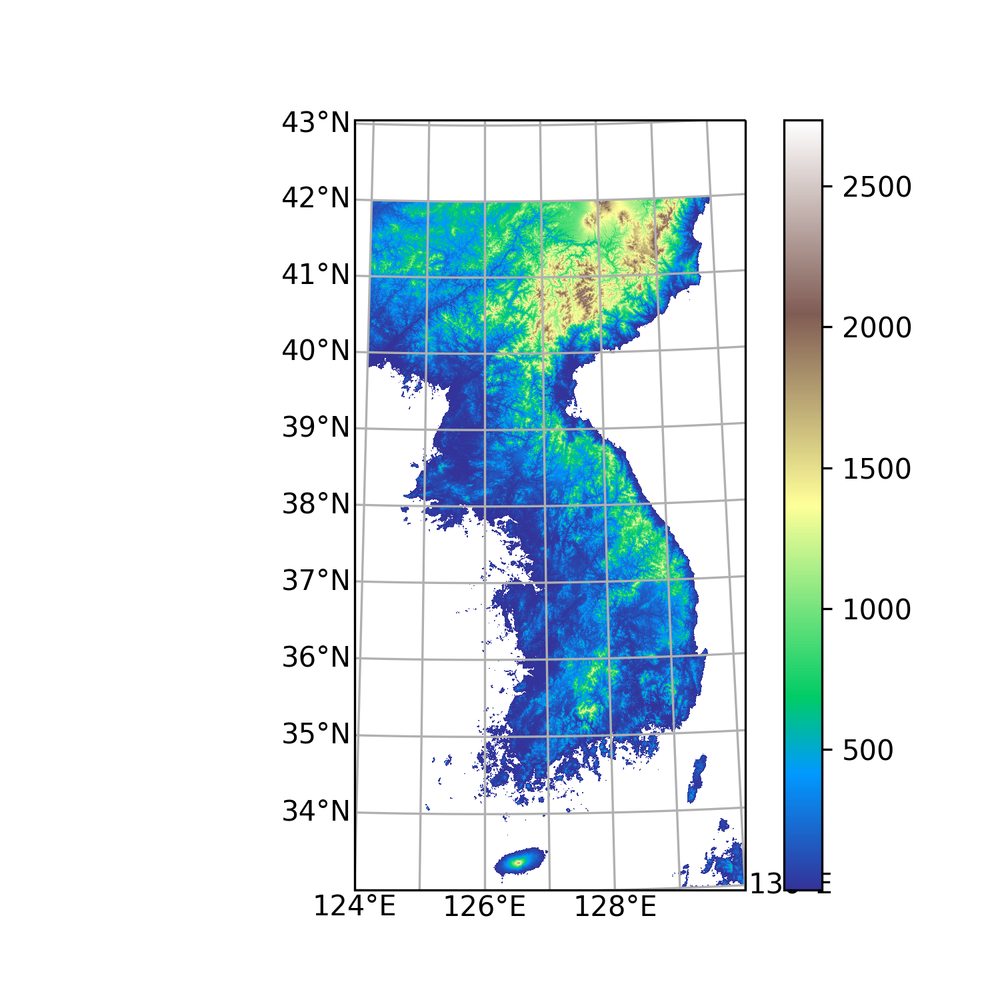

Note
Click here to download the full example code or to run this example in your browser via Binder
Plotting DEM¶
Read/plot DEM and korea map with DFS map projection
Out:
/home/kwonil/git/kkpy/examples/plot_dem.py:28: MatplotlibDeprecationWarning: You are modifying the state of a globally registered colormap. In future versions, you will not be able to modify a registered colormap in-place. To remove this warning, you can make a copy of the colormap first. cmap = copy.copy(mpl.cm.get_cmap("terrain"))
cmap.set_under('white')
7 8 9 10 11 12 13 14 15 16 17 18 19 20 21 22 23 24 25 26 27 28 29 30 31 32 33 34 35 36 37 38 39 40 | import numpy as np
import matplotlib.pyplot as plt
import matplotlib.ticker as mticker
import cartopy.crs as ccrs
import kkpy
# read DEM
dem, londem, latdem, projdem = kkpy.io.read_dem(area='korea')
# load DFS projection
proj = kkpy.util.proj_dfs()
# initialize figure and axes
fig = plt.figure(figsize=(5,5), dpi=300)
ax = plt.subplot(projection=proj)
# set boundary of map
ax.set_extent([124, 130, 33, 43], crs=ccrs.PlateCarree())
# plot dem
cmap = plt.cm.terrain
cmap.set_under('white')
plt.pcolormesh(londem, latdem, dem, transform=ccrs.PlateCarree(), cmap=cmap)
plt.colorbar()
# set grid
gl = ax.gridlines(draw_labels=True, dms=False, x_inline=False, y_inline=False)
gl.xlocator = mticker.FixedLocator(np.arange(124,130.1,1))
gl.ylocator = mticker.FixedLocator(np.arange(33,43.1,1))
gl.rotate_labels = False
gl.top_labels = gl.right_labels = False
#kkpy.plot.koreamap(ax=ax)
plt.show()
|
Total running time of the script: ( 2 minutes 9.395 seconds)
Estimated memory usage: 10478 MB